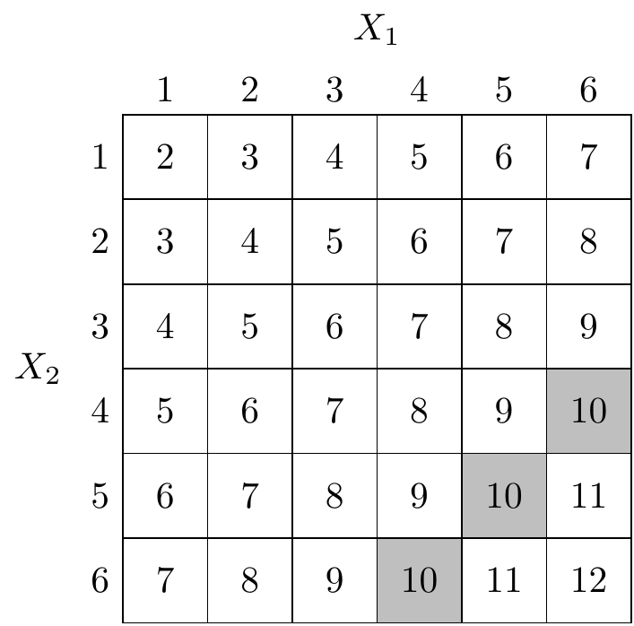

Problem Sheet 1
You should attempt all these questions and write up your solutions in advance of your workshop in week 2 (Monday 1 or Tuesday 2 February) where the answers will be discussed.
1. When designing a model for a quantity that changes over time, one has many decisions to make:
- Discrete or continuous state space?
- Discrete or continuous index set for time?
- Deterministic or stochastic model?
- If a stochastic model is chosen, is it reasonable to assume that the Markov property holds?
What would you decide for the following scenarios:
(a) The percentage of US voters with a positive opinion of Donald Trump in the Gallup weekly tracking poll.
(b) The number of points won by a football league club throughout the season.
(c) The temperature of a bowl of water placed in an oven.
(d) The number of people inside the Chemistry building.
Suggestions. This question is meant to inspire discussion, so there are not necessarily right and wrong answers. If I were designing the models, however, my choices might be these:
(a) Discrete space if percentages are given to nearest 1%, otherwise continuous; discrete time (weekly); stochastic; the Markov property might be appropriate, perhaps using some sort of random walk.
(b) Discrete space (number of points); discrete time (update after each game); stochastic; the Markov property might be appropriate, depending on if you think teams can have non-Markovian “winning streaks” (or losing streaks) that don’t reflect underlying performance.
(c) Continuous space (temperature); continuous time; if the oven is reliable and the experiment carried out carefully, a deterministic model might be sufficient.
(d) Discrete space (number of people); continuous time; stochastic; Markov property might not be appropriate due to `bursts’ of people leaving during fire drills or lectures finishing early.
2. A fair six-sided dice is rolled twice, resulting in the values \(X_1, X_2 \in \{1, 2, \ldots, 6\}\). Let \(Y = X_1 + X_2\) be the total score. Calculate:
(a) the probability \(\mathbb P(Y = 10)\);
Solution. The following table illustrates the possible outcomes \(Y\) of the experiment. Each cell of the table is an equally probable outcome.

There are 3 possible ways to get \(Y=10\) (the grey cells in the table) out of the \(36\) possible outcomes, so we have \(\mathbb P(Y = 10) = 3/36 = 1/12\).
(b) the conditional probability \(\mathbb P(Y=10 \mid X_1=x)\) for \(x=1, 2, \ldots, 6\);
Solution. Conditioning on \(X_1 = x\) means restricting our attention only to column \(x\) of the table. Each column has \(6\) equally probably cells. For \(x=1,2,3\), none of the entries equal \(10\), so \(\mathbb P(Y=10 \mid X_1=x) = 0/6 = 0\). For each of \(x=4,5,6\), one of the entries equals \(10\), so \(\mathbb P(Y=10 \mid X_1=x) = 1/6\).
(c) the conditional probability \(\mathbb P(X_1=x \mid Y=10)\) for \(x=1, 2, \ldots, 6\).
Solution. Conditioning on \(Y =10\) means restricting our attention only to the \(3\) shaded cells, which are each equally likely. For \(x=1,2,3\), none of the shaded cells are in column \(x\), so \(\mathbb P(X_1=x \mid Y=10) = 0/3 = 0\). For each of \(x=4,5,6\), one of the shaded cells is in column \(x\), so \(\mathbb P(X_1=x \mid Y=10) = 1/3\).
3. Let \((X_n)\) be a simple random walk starting from \(X_0 = 0\) and that at each step goes up one with probability \(p\) or down one with probability \(q = 1-p\). What are:
(a) \(\mathbb P(X_5 = 3)\),
Solution. To get \(X_5 = 3\), we must take \(4\) steps up and \(1\) step down. The down step can be at any of the \(5\) time steps. Therefore we have \(\mathbb P(X_5 = 3) = 5p^4q\).
(b) \(\mathbb P(X_5 = 3 \mid X_2 = 2)\),
Solution. Once we’re at \(X_2 = 2\), we must take \(2\) steps up and \(1\) step down over the next \(3\) time steps. So \(\mathbb P(X_5 = 3 \mid X_2 = 2) = 3p^2q\).
(c) \(\mathbb P(X_n = n-2)\),
Solution. This requires \(n-1\) steps up and \(1\) step down, and the down step can be at any of the \(n\) time steps. So \(\mathbb P(X_n = n-2) = np^{n-1}q\).
(d) \(\mathbb E X_4\),
Solution. The increments \(Z_n = X_n - X_{n-1}\) have expectation \(1p + (-1)q = p - q\), so \(\mathbb E X_4 = 4(p-q)\).
(e) \(\mathbb E(X_6 \mid X_4 = 2)\),
Solution. We are already at 2, then another two increments will take us up \(2(p-q)\) on average. Therefore \(\mathbb E(X_6 \mid X_4 = 2) = 2 + 2(p-q)\).
4. The price \(X_n\) of a stock at the close of day \(n\) is modelled as a Gaussian random walk, where the increments \((Z_n)\) have a normal distribution \(Z_n \sim \text{N}(\mu, \sigma^2)\). The model assumes a drift of \(\mu = 0.7\) and a volatility of \(\sigma = 2.2\). The initial price is \(X_0 = 42.3\).
(a) Calculate the mean and variance of the price of the stock at the close of day \(5\).
Solution. The mean and variance are \[\begin{gather*} \mathbb EX_5 = \mathbb E X_0 + n \mathbb E Z_1 = 42.3 + 5 \cdot 0.7 = 45.8 , \\ \operatorname{Var}X_5 = \operatorname{Var}X_0 + n \operatorname{Var}Z_1 = 0 + 5 (2.2)^2 = 24.2 . \end{gather*}\]
(b) Give a 95% prediction interval for the price at the close of day 5. (You might find it useful to recall that, if \(W \sim \text{N}(0,1)\) is a standard normal random variable, then \(\mathbb P(W \leq 1.96) = 0.975\).)
Solution. Note that \(X_5\) itself is normally distributed, so \(X_5 \sim \text{N}(45.8,24.2)\). The 95% prediction interval for a normal distribution \(\text{N}(\mu, \sigma^2)\) is \((\mu - 1.96\sigma, \mu + 1.96\sigma)\), so the prediction interval for \(X_5\) is \[ \big(45.8 - 1.96\sqrt{24.2}, 45.8 + 1.96\sqrt{24.2}\big) = (36.16, 55.44) . \]
(c) After day 4, the prices at the end of each of the first four days have been recorded as \(X_1 = 44.4, X_2 = 44.0, X_3 = 47.1, X_4 = 47.8\). Update your prediction interval for the price at the close of day 5, and comment on how it differs from the earlier prediction interval.
Solution. By the Markov property, \(X_5\) depends on \(X_4\), but given \(X_4\) does not depend on the other values, which we can therefore ignore. Since \(X_5 = X_4 + Z_5\), we have \[\begin{gather*} \mathbb E(X_5 \mid X_4) = X_4 + \mathbb E Z_5 = 47.8 + 0.7 = 48.5 \\ \operatorname{Var}(X_5 \mid X_4) = 0 + \operatorname{Var}Z_5 = 0 + (2.2)^2 = 4.84. \end{gather*}\] The desired prediction interval is \[ \big(48.5 - 1.96\sqrt{4.84}, 48.5+ 1.96\sqrt{4.84}\big) = (44.19, 52.81) . \] Compared to before, the centre of the prediction interval is slightly higher, because the stock has outperformed expectations so far, and the interval is much narrower, because as we get closer to day 5 we become less uncertain.
5. A gambler decides to model her total winnings as a simple random walk starting from \(X_0 = 0\) that at each time goes up one with probability \(p\) and down one with probability \(1-p\), but where \(p\) is unknown. The first \(10\) recordings, \(X_1\) to \(X_{10}\), are \[ (1, 2, 1, 2, 3, 4, 5, 6, 5, 6) . \]
(a) What would you guess for the value of \(p\), given this data?
Solution. In \(10\) time steps, the process went up \(k = 8\) times and down \(n - k = 2\) times. So it seems reasonable to guess that \(p\) has the value \(\hat p = 8/10 = 0.8\).
(b) More generally, how would you estimate \(p\) from the data \(X_0 = 0, X_1 = x_1, X_2 = x_2, \dots, X_n = x_n\)?
Solution. We will estimate \(\hat p = k/n\), where \(k\) is the number of upward steps. We saw in lectures that \(k = (n + x_n)/2\), so our estimate is \[ \hat p = \frac{n + x_n}{2n} = \frac12\ + \frac{x_n}{2n} . \]
(c) Show that your estimate is in fact the maximum likelihood estimate of \(p\).
Solution. You could answer this question by using what you know about maximum likelihood estimation for the binomial distribution from MATH1712, but we’ll reason from first principles here.
If we let \(k\) be the number of upward steps, then the likelihood is \[ f(\mathbf x; p) = p^{k}(1-p)^{n-k} , \] making the the log-likelihood \[ \ell(\mathbf x; p) = \ln f(\mathbf x; p) = k \ln p + (n-k)\ln(1-p) .\] We maximise this by differentiating and setting equal to \(0\). The derivative is \[ \frac{\text{d}}{\text{d}p} \ell(\mathbf x; p) = \frac kp - \frac{n-k}{1-p} ,\] so the maximum likelihood estimate \(\hat p\) satisfies \[ 0 = \frac k{\hat p} - \frac{n-k}{1-\hat p} . \] Solving this by clearing denominators we get \[ 0 = (k - k\hat p) - (n\hat p - k\hat p) = k - n \hat p , \] and rearranging gives \(\hat p = k/n\) as desired.